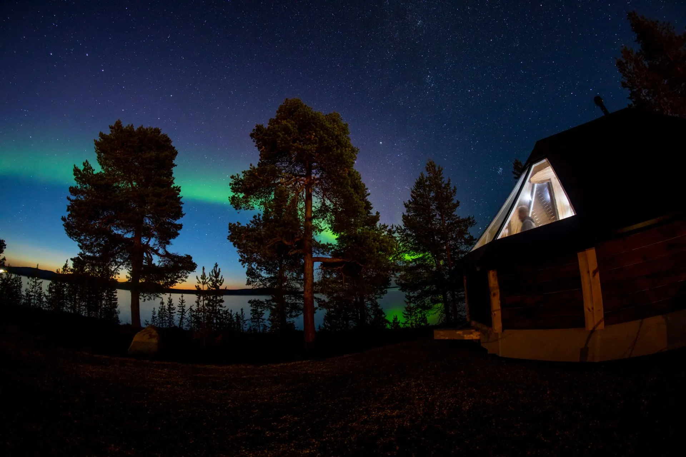
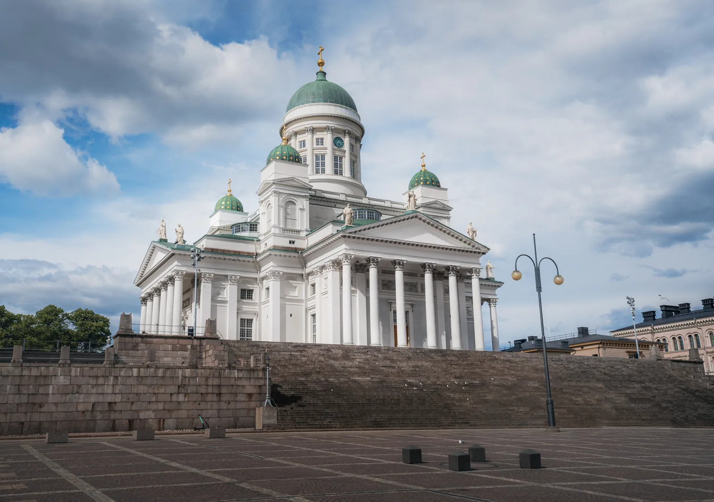
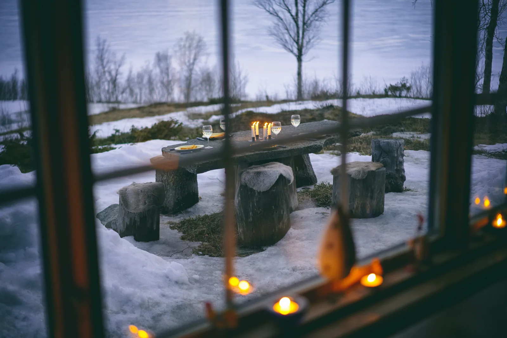
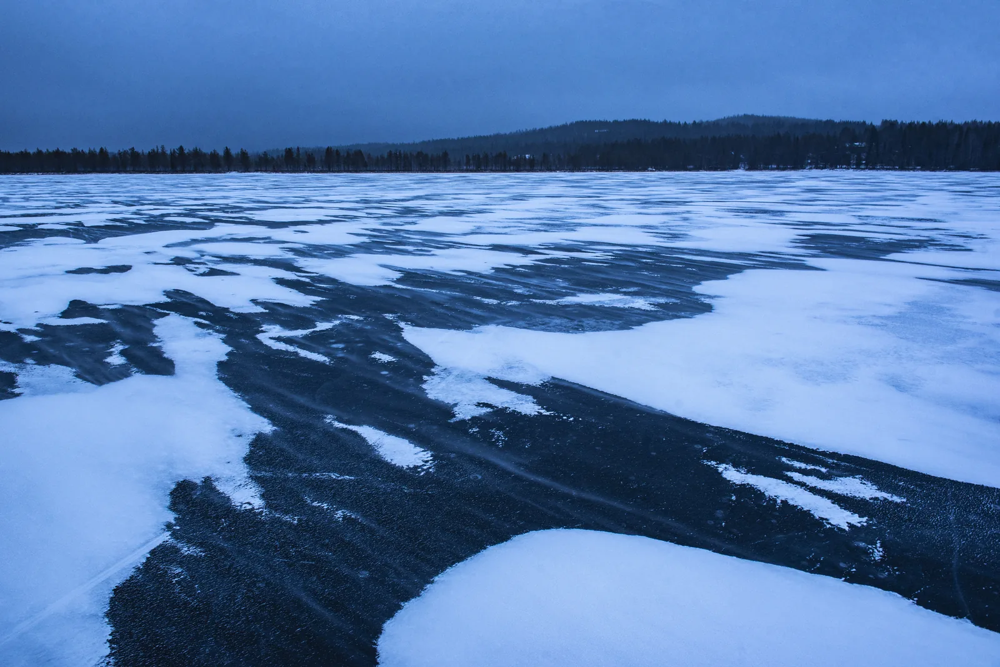
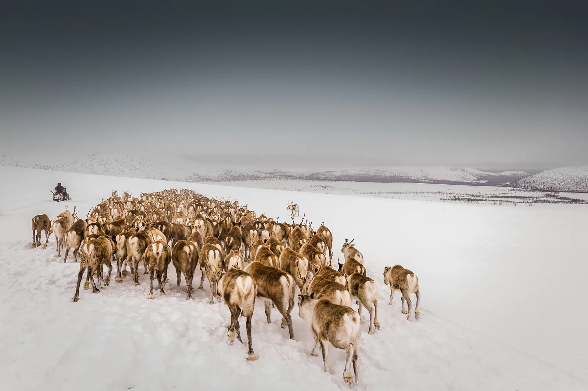
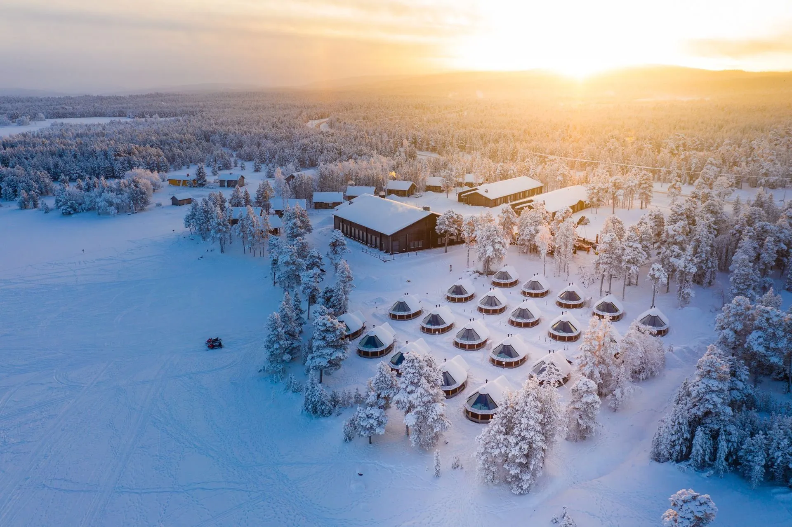
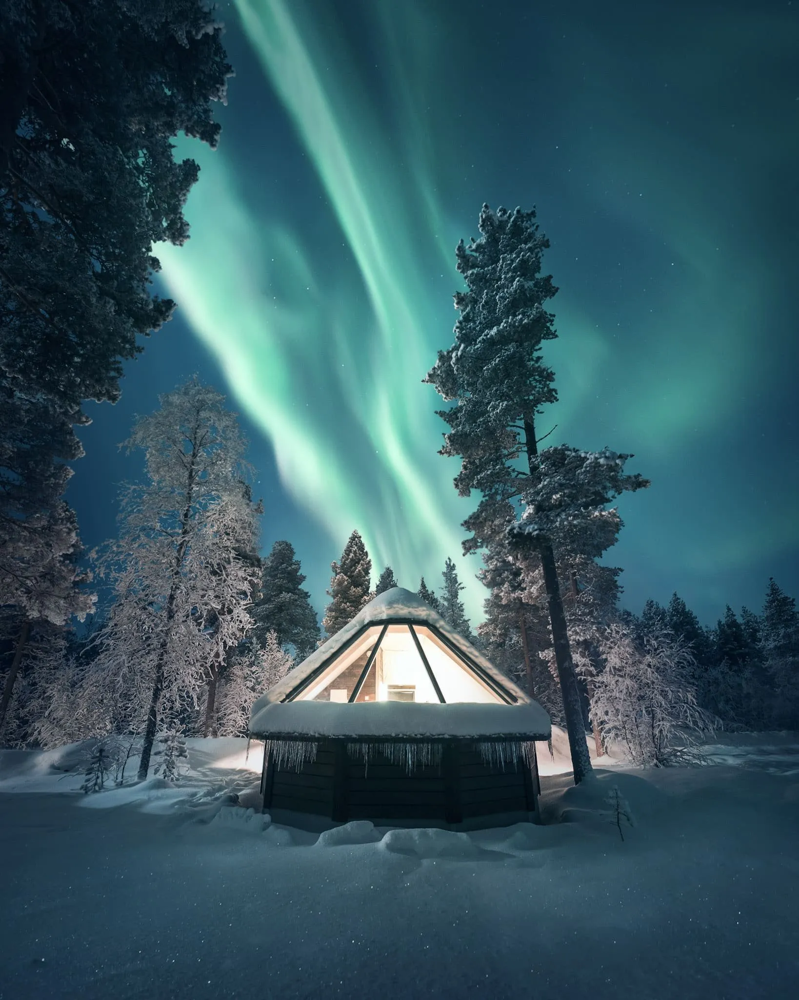
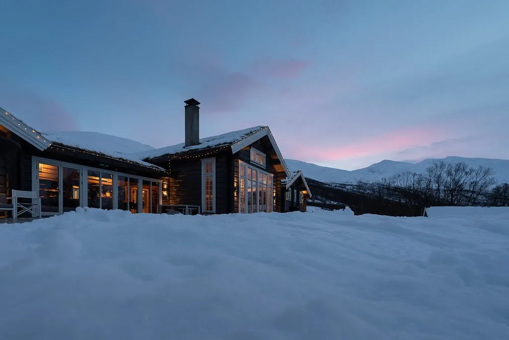

Día 1 · Viernes 8 de enero
La llegada a Helsinki
Traslados al llegar y acomodación en el centro de Helsinki. Presentación del viaje y primera cena de la casa, con el norte todavía por delante.

Nueve noches del lago Inari al fiordo de Lyngen: una familia sami, la aurora bajo techo de cristal y los perros de trineo.
Ver fechas y tarifaEl corazón sami de Inari, dos noches bajo un techo de cristal en Ivalo, el ritual de la sauna y el lago helado, y el cierre en Noruega: el fiordo de Lyngen y los perros de trineo. Diez lugares.
El regreso por Tromsø, el 17 de enero.
Dos noches bajo un techo de vidrio en Ivalo, con la aurora al alcance de la cama.
Un encuentro con una familia sami de pastores de renos, en Inari, acompañado por un intérprete.
El detalle de cada acceso —el nombre, la hora, la puerta— se comparte con los viajeros de la expedición, no antes.
Traslados al llegar y acomodación en el centro de Helsinki. Presentación del viaje y primera cena de la casa, con el norte todavía por delante.
Vuelo al norte y acomodación sobre el lago Inari, congelado de orilla a orilla. Primera tarde para entender la luz de enero: lo más claro del día llega cerca del mediodía y dura tres o cuatro horas, y después el cielo se va de azul a violeta hasta la noche.
El primer acceso: una familia sami de pastores de renos, en su terreno y en su idioma, con intérprete. Cómo se lee la nieve, cómo se mueve el rebaño en invierno y qué queda hoy de una vida que fue nómade. Por la tarde, Inari y el Siida.

Día sin traslado, con el lago enfrente: raquetas por el bosque, pesca en el hielo o trineo de renos, según el día y las ganas. Al caer la tarde, la sauna y la zambullida en el agujero del hielo, que es el centro exacto de la cultura finlandesa.
Una sola noche en una cabaña de techo de cristal: la aurora, si sale, se mira desde la cama y sin abrigo. No es un acceso, es una manera de dormir, y por eso se hace una vez y no cuatro.

Cruce al oeste, a Tromsø, y traslado hasta el fiordo de Lyngen. Acomodación frente a los Alpes de Lyngen, que caen al agua sin pasar por la llanura.
El día del fiordo, con la salida que permitan las condiciones: raquetas, esquí de travesía o navegación entre las montañas y el agua negra. La decisión se toma a la mañana, mirando el cielo.

Trineo de perros por el valle de Lyngendalen, con las manos en las riendas y no de pasajero. La tarde libre en el lodge, con el fiordo enfrente.
El segundo acceso: la mesa de una casa del fiordo, con lo que se pescó ese día y una familia que vive del mar en el paralelo 69. Última noche.

Traslado a Tromsø y conexiones según el vuelo de cada uno.
Nueve noches en tres bases: una en Helsinki, cuatro sobre el lago Inari y cuatro frente a los Alpes de Lyngen. En el medio, una sola noche bajo un techo de cristal.



Desde USD 10.800 por persona